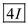
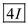
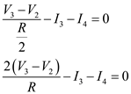
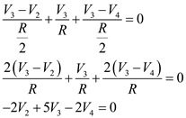

Step 1:
Refer to the circuit in Figure P2.31 in the textbook.
Consider that the op-amp is ideal. Therefore, the voltage at the inverting and non-inverting terminal is same and equal to zero volts.
The resistance network looking from the node 1 is,
Calculate the resistance seen from node 1.
Therefore, the resistance seen from the node 1,  is, .
is, .
Step 2:
The resistance network looking from the node 2 is,
Calculate the resistance seen from node 2.
Therefore, the resistance seen from the node 2,  is,
is,  .
.
Step 3:
The resistance network looking from the node 3 is,
Step 4:
Calculate the resistance seen from node 3.
Simplify further.
Therefore, the resistance seen from the node 3,  is,
is,  .
.
Step 5:
The resistance network looking from the node 4 is,

Step 6:
Calculate the resistance seen from node 4.
Simplify further.
Therefore, the resistance seen from the node 4,  is,
is,  .
.
Step 7:
(b)
Apply Kirchhoff’s current law at the inverting terminal of the op-amp.
 …… (1)
…… (1)
From the circuit in Figure P2.31, the voltage at node 1 is,
…… (2)
Equate equations (1) and (2).
Therefore, the current,  in terms of input current is .
in terms of input current is .
Step 8:
Apply Kirchhoff’s current law at node 1.
…… (3)
From the circuit in Figure P2.31, the voltage at node 2 is,
…… (4)
Equate equations (3) and (4).
Therefore, the current,  in terms of input current is .
in terms of input current is .
Step 9:
Apply Kirchhoff’s current law at node 2.
Substitute  for
for  , for
, for  and
and  for
for  in the equation.
in the equation.
 …… (5)
…… (5)
From the circuit in Figure P2.31, the voltage at node 3 is,
…… (6)
Equate equations (5) and (6).
Therefore, the current,  in terms of input current is .
in terms of input current is .
Step 10:
Apply Kirchhoff’s current law at node 3.

Substitute for  ,
,  for
for  and for
and for  in the equation.
in the equation.
Therefore, the current,  in terms of input current is .
in terms of input current is .
Step 11:
(c)
The voltage at node 1 in terms of  is,
is,
Therefore, the voltage at node 1,  in terms of
in terms of is .
is .
The voltage at node 2 in terms of  is,
is,

Therefore, the voltage at node 2,  in terms of
in terms of is .
is .
The voltage at node 3 in terms of  is,
is,
Therefore, the voltage at node 3,  in terms of
in terms of is .
is .
Step 12:
Apply Kirchhoff’s current law at node 3.

Substitute  for
for  , and for
, and for  in the equation.
in the equation.

Therefore, the voltage at node 4,  in terms of
in terms of is .
is .